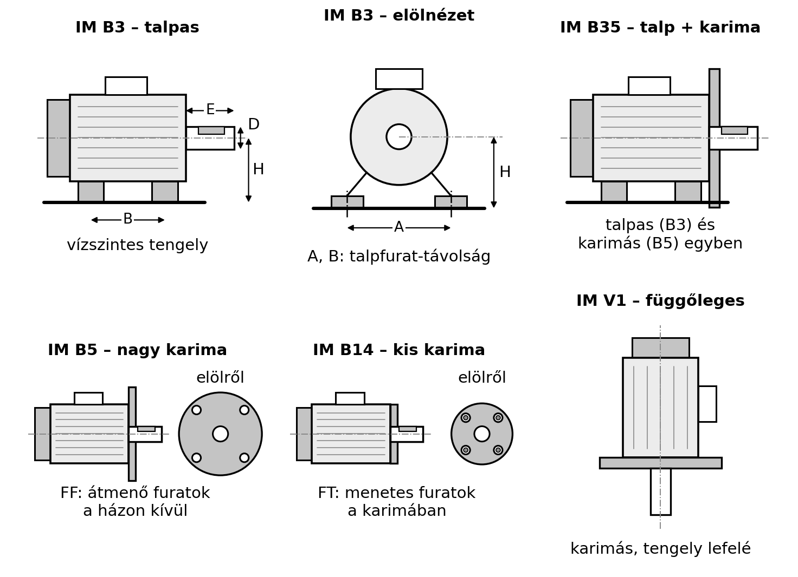

Statikus változat (mint a PDF-ben)
Egy ipari szivattyúnál a motor csapágycseréje után a szerelő visszarakta a tengelykapcsolót, de a próbajáraton a berendezés erősen rezeg, a gumi tengelykapcsoló-betét pedig szemmel láthatóan kopik. A villanyszerelő feladata nem ér véget a motor kábeleinek bekötésével: ahhoz, hogy a hajtás hosszú távon üzemeljen, a motor és a hajtott gép közötti mechanikai kapcsolatot is ismernie kell. Ez az alfejezet a villamos motorokhoz kapcsolódó gépelemek – tengelykapcsoló, csapágy, szíjhajtás, fogaskerék – szerepét, beállítását és ellenőrzését tanítja meg.
Biztonsági korlát. A gyakorlati útmutatók tanműhelyi környezetre vagy jogosult oktató felügyeletére vonatkoznak; hálózati feszültségen önállóan ne dolgozz.
A hajtáslánc a villamos motortól a munkagépig viszi a teljesítményt: a motor tengelye a tengelykapcsolón keresztül adja át a nyomatékot, majd ékszíj és/vagy fogaskerék-hajtómű lassítja a fordulatszámot, végül a munkagép (itt egy szállítószalag dobja) végzi a hasznos munkát. Minden fokozat két dolgot tesz: a fordulatszámot az áttétel arányában csökkenti, a nyomatékot ugyanennyiszeresére növeli – és közben a hatásfoka szerint veszteséget termel. A következő ábra ezt egy szállítószalag hajtásán számokkal mutatja: minden tengelyen kiírtuk a fordulatszámot (), a nyomatékot () és a teljesítményt (), alul pedig a teljesítményáram sávja szemlélteti, hol mennyi vész el.
Olvasd le az ábráról: a motortól a dob felé haladva a fordulatszám 1440 → 960 → 24 1/min-re csökken, a nyomaték 7,80 → 11,11 → 400 N·m-re nő, a teljesítmény viszont minden fokozatban csak csökken (1176 → 1117 → 1005 W). A HTML-kiadásban az erő, a sebesség, a dobátmérő, az áttételek és a hatásfokok csúszkával változtathatók, és a lap kiszámolja a szükséges motorteljesítményt is.
A villamos oldal: motorvédő-beállítás. A választott motor adattáblája (a könyv motortáblája szerint, szemléltető): 1,5 kW, 400 V Y kapcsolás, , , névleges áram . A motorvédő kapcsolót (például 2,5–4 A-es beállítási tartományút) a névleges áramra, 3,2 A-re állítjuk. A leágazás méretezése az szabály szerint: , a védelem 3,2 A-re állítva, a kábel (például 4×1,5 mm² réz) terhelhetősége ennél jóval nagyobb; a zárlatvédelmet a motorvédő mágneses kioldója adja (lásd a Motorvédő kapcsoló, hőkioldó, megszakító és szakaszoló és a Vezetékvédelem, koordináció és zárlati áram alfejezetet).
Definíció. A tengelykapcsoló két, egytengelyű (vagy kis szögeltérésű) tengely összekapcsolására szolgáló gépelem, amely a forgatónyomatékot a hajtó tengelyről a hajtott tengelyre viszi át, miközben lehetővé teheti a két tengely közötti kisebb szerelési hibák kiegyenlítését vagy az oldható kapcsolatot.
A tengelykapcsoló két fő csoportja:
Merev tengelykapcsoló: a két tengelyvéget mereven, játék nélkül köti össze, így a szerelési hibákat nem tudja kiegyenlíteni. Ilyen például a tárcsás tengelykapcsoló (a két tárcsát csavarokkal fogjuk össze). Csak pontosan beállított tengelyeknél használható, mert minden eltérés a csapágyakat és a tengelyt terheli.
Rugalmas (kiegyenlítő) tengelykapcsoló: rugalmas betéttel (gumi, műanyag) vagy rugóval rendelkezik, amely elnyeli a kisebb szög- és párhuzamossági hibákat, valamint csillapítja a lökésszerű terhelést. Ilyen például a karmos tengelykapcsoló (a két fél közé rugalmas gumicsillag kerül) vagy a Hardy-tárcsás tengelykapcsoló (rugalmas tárcsa).
Az alábbi ábra a két leggyakoribb típus felépítését mutatja. A merev tárcsás tengelykapcsolónál (a) mindkét tengelyvégre (1) retesszel egy-egy tárcsás agy (2) kerül; a két tárcsát a központosító perem (3) illeszti egymáshoz, a kötőcsavarok (4) pedig mereven összefogják. A rugalmas karmos tengelykapcsolónál (b–d) a két karmos agy (5) karmai a rugalmas gumicsillag (6) ágai közé nyúlnak, az agyakat hernyócsavar (7) rögzíti a tengelyen, és a két agy között a gyártó által előírt axiális hézag (8) marad.
Figyeld meg, hogy a központosító perem csak a két tárcsát igazítja egymáshoz; a két tengely egytengelyűségét nem állítja be, azt a motor helyzetével kell elérni. A rugalmas betét a kis hibát elviseli, de a beállítást nem pótolja: a gyorsan kopó, morzsolódó gumicsillag rendszerint rossz beállításra utal. A HTML-kiadásban a részekre mutatva megjelenik a feladatuk.
A tengelykapcsoló beállításának legfontosabb követelménye az egytengelyűség: a hajtó és a hajtott tengely középvonala egybe kell, hogy essen. Ennek három összetevője van:
Az alábbi ábra felső sora erősen túlozva mutatja a három eltérést: a párhuzamos eltolást (a, δ), a szögeltérést (b, α) és a nem megfelelő axiális hézagot (c, s). Az alsó sor a gyors ellenőrzés eszközeit mutatja: a magasabb palástra fektetett acélvonalzó alatt a másik félen fényrés látszik, ennek nagyságát hézagmérővel becsüljük (d); a homlokrést fent és lent hézagmérővel mérve a különbség a szöghibát jelzi (e); a lézeres tengelybeállító két mérőfeje mindkét síkban kiírja az eltolást és a szöghibát (f).
A vonalzós ellenőrzés gyors, de csak a durva hibát mutatja ki; a tűréshez (néhány század mm) mérőóra vagy lézeres beállító kell (lásd alább a mérőórás mérést). Mindegyik mérés leválasztott, lezárt hajtáson, kézzel forgatott tengellyel történik. A HTML-kiadásban az ábra panelenként, magyarázattal lejátszható.
Szabály. A tengelykapcsoló beállítását úgy kell elvégezni, hogy a radiális eltérés és a szögeltérés a gyártó által megadott tűrésen belül legyen. A tűrés jellemzően néhány század milliméter (pl. 0,05 mm) radiális eltérésnél, és a tengelykapcsoló gyártójának katalógusából veendő (ellenőrizendő: gyártói adatlap).
Mérés mérőórával. Az egytengelyűséget leggyakrabban mérőórával (század mm-es pontosságú mérőműszer) és mágneses állvánnyal ellenőrizzük. A mérőórát az egyik tengelykapcsoló-félre rögzítjük, a mérőcsúcsot pedig a másik fél kerületére (radiális mérés) vagy homlokfelületére (axiális mérés) helyezzük. A tengelyt lassan körbeforgatva a mérőóra kitérése megmutatja az eltérést. A mérési pontokat feljegyezzük, és a motor lábainál alátétlemezekkel, illetve a motor eltolásával korrigálunk.
A következő ábra a palástmérést mutatja az 5. feladat adataival. A mérőóra a motor tengelykapcsoló-felén van, a csúcsa a szivattyú-fél palástján; 0°-on (felül) nullázzuk, majd a két tengelyt együtt 90°-onként elforgatva leolvasunk: 0,00 / +0,06 / +0,18 / +0,12 mm. Az ellenőrző összeg () egyezik, tehát a mérés érvényes. A tengelyek eltolódása a teljes kifutás (TIR) fele: függőlegesen mm, ezt alátétlemezekkel korrigáljuk; vízszintesen (90°-os mínusz 270°-os leolvasás) mm, ezt a motor oldaltolásával. A homlokmérés (csúcs a homloklapon) a szöghibát mutatja. A HTML-kiadásban a mérés lépésenként lejátszható, és saját eltolódással új mérés indítható.

Számítás. Ha a mérőóra a teljes körülfordulás alatt 0,12 mm-t mutat, akkor a teljes kifutás (TIR) 0,12 mm. A tengelyek eltolódása ennek fele: 0,06 mm. Ha a megengedett eltolódás 0,05 mm (ellenőrizendő: a gyártói tűrés eltolódásra vagy TIR-re vonatkozik; adatlapból olvasandó), a beállítás nem megfelelő, és a függőleges hibát alátéttel, a vízszintest a motor oldalirányú eltolásával kell korrigálni.
Definíció. A csapágy a forgó tengelyek megtámasztására és a fellépő erők felvételére szolgáló gépelem, amely lehetővé teszi a tengely kis súrlódású forgását. A gördülőcsapágy gördülőelemek (golyó vagy görgő) segítségével csökkenti a súrlódást, szemben a csúszócsapággyal, ahol a tengelycsap közvetlenül a csapágy anyagában forog.
A leggyakoribb gördülőcsapágy típusok:
Csapágyjelölés. A gördülőcsapágyak jelölése szabványos, általában 3–5 számjegyből áll. Például a 6205 jelölésű csapágy:
Így a 6205 csapágy furata 25 mm, típusa mélyhornyú golyóscsapágy.
A gördülőcsapágy részeit az alábbi ábra mutatja: a külső gyűrű (1) a csapágyházban (pajzsban), a belső gyűrű (2) a tengelyen ül; a kettő futópályáján (6) gördülnek a golyók (3), amelyeket a kosár (4) tart egyenletes osztásban; a zárt csapágyat kétoldalt tömítés vagy fedőlemez (5) védi. Az ábra alsó sora a négy típus félmetszetét mutatja: a nyilak vastagsága jelzi, mekkora radiális (Fr) és axiális (Fa) erőt vesz fel az adott típus.
A fel- és leszerelésnél az a döntő, melyik gyűrű ül szorosan: a tengelyen ülő csapágynál az erőt mindig a belső gyűrűre kell vinni, a golyókon át soha. A jelölés utótagjai (például a tömítés jele) gyártónként eltérhetnek, ezért cserénél a teljes jelölést a katalógussal egyeztesd. A HTML-kiadásban a részekre és a típusokra mutatva olvasható a rövid leírásuk.
Kenés. A gördülőcsapágyak üzemi hőmérsékletét és élettartamát a megfelelő kenés biztosítja. A leggyakoribb a zsírkenés, ritkábban az olajkenés. A kenőzsír mennyiségére vonatkozóan a gyakorlatban irányérték, hogy a csapágyház üres térfogatának kb. 30–50%-a legyen a zsír (ellenőrizendő: gyártói előírás). A túl sok zsír éppúgy káros, mint a túl kevés: a keveredési ellenállás miatt a csapágy melegszik. A kenési periódus a fordulatszámtól, a terheléstől és a környezettől függ, lásd a gyártói katalógust.
Állapotellenőrzés. A csapágy állapotát elsősorban az alábbi jelekből ítélhetjük meg:
Figyelem. A csapágy cseréjekor a csapágyat csak a megfelelő szerszámokkal, a belső vagy külső gyűrűre ható egyenletes erővel szabad felszerelni. A golyósorra vagy a görgőkre közvetlenül ütni tilos; ez a csapágy azonnali tönkremenetelét okozhatja.
Definíció. A szíjhajtás két vagy több tengely közötti erőátvitelt valósít meg rugalmas szíj és tárcsák segítségével. A szíj a tárcsák hornyában helyezkedik el, és a súrlódás vagy fogazat révén továbbítja a nyomatékot.
Szíjhajtás típusok:
Áttétel számítása. A szíjhajtás áttétele – jó közelítéssel, a szíj csúszását elhanyagolva – a tárcsaátmérők arányával egyenlő:
ahol: - : a hajtó tárcsa fordulatszáma (1/min), - : a hajtott tárcsa fordulatszáma (1/min), - : a hajtó tárcsa átmérője (mm), - : a hajtott tárcsa átmérője (mm).
Szíjfeszítés ellenőrzése. Az ékszíj feszítését a gyakorlatban a lehajlás mérésével ellenőrizzük. A szíj közepén, a két tárcsa között, meghatározott erővel (pl. 10 N) nyomva a szíj lehajlását mérővonalzóval vagy speciális feszültségmérővel mérjük. Az ideális lehajlás a tengelytávolság függvényében jellemzően méterenként 10–15 mm (ellenőrizendő: gyártói táblázat). A túl feszes szíj túlterheli a csapágyakat, a túl laza szíj pedig csúszik, melegszik és idő előtt kopik. Emellett a tárcsáknak párhuzamosnak kell lenniük; ezt párhuzamossági vonalzóval vagy lézeres tárcsabeállítóval ellenőrizzük.
Az alábbi ábra (a) része a behajlásmérést mutatja: a feszes ág közepén a feszítésmérővel F erővel (pl. 10 N) nyomjuk a szíjat, és a két tárcsára fektetett vonalzóhoz (szaggatott vonal) képest mérjük az s behajlást; t a tengelytáv. A fejezet irányértékével egy 0,6 m-es tengelytávnál s ≈ 6–9 mm, de a pontos erőt és behajlást a szíj gyártójának táblázata adja. A (b)–(d) felülnézetek a tárcsák egysíkúságát mutatják: helyes esetben a homlokokra fektetett vonalzó négy ponton felfekszik (b), eltolásnál rés látszik a hajtott tárcsánál (c), szöghibánál ék alakú rés (d).

A mérés és az állítás csak leválasztott, lezárt hajtáson végezhető, a szíjvédő burkolatot a munka végén vissza kell szerelni. Új szíjnál a feszítést néhány üzemóra után ismételten ellenőrizni szokás, mert a szíj megnyúlik (ellenőrizendő: szíjgyártói ajánlás). A HTML-kiadásban az ábra négy képe egyenként, magyarázattal megnézhető.
Szíjcserénél három számot kell ismerned vagy kiszámolnod:
Többhornyú hajtás szabálya. A szíjakat mindig teljes készletben cseréljük (azonos gyártó és hosszcsoport); új és régi szíjat nem keverünk, mert a rövidebb, új szíj viszi a terhelés nagy részét.
Definíció. A fogaskerék-hajtómű két vagy több fogaskerék segítségével csökkenti (vagy növeli) a fordulatszámot, miközben a nyomatékot áttételezi. A hajtómű a hajtáslánc fontos eleme, mert a villamos motorok jellemzően nagy fordulatszámon adják le a névleges nyomatékot, míg a munkagépek (szállítószalag, keverő, szivattyú) gyakran kisebb fordulatszámot igényelnek.
A leggyakoribb fogaskerék-típusok:
Áttétel számítása. Fogaskerék-hajtóműnél az áttétel a fogszámok arányával egyenlő:
ahol a hajtó kerék fogszáma, a hajtott kerék fogszáma.
Fogaskerék beállítás és kenés. A fogaskerekek foglalkozásánál ellenőrizni kell a foghézagot: a fogak közötti játékot, amely a kenőanyag film kialakulását és a hőtágulást teszi lehetővé. A túl nagy foghézag zajt és lökést okoz, a túl kicsi pedig beszoruláshoz, melegedéshez vezet. A hajtómű kenésére általában olajat használnak; a szintet olajszint-ellenőrző üvegen vagy nívópálcán ellenőrizzük, a csereperiódus a gyártó előírása szerint történik.
Egy ventilátor, centrifuga vagy daráló lassan gyorsul fel. Közben a motor hosszú ideig nagy indítóáramot vesz fel, és a motorvédő „indokolatlanul” kioldhat. Ezért a felfutási időt becsülni kell.
Összefüggés. A gyorsítónyomaték a motor átlagos nyomatékának és a terhelő nyomatéknak a különbsége; a felfutási idő álló helyzetből:
A tehetetlenségi nyomatékot (mértékegysége kg·m²) a motortengelyre kell vonatkoztatni. Ha a munkagép áttételen keresztül kapcsolódik (), a gép tehetetlensége -tel osztva jelenik meg a motortengelyen:
Következmény a motorvédelemre. A hőkioldók kioldási osztálya azt adja meg, mennyi idő alatt old ki hideg állapotból a beállított áram 7,2-szeresénél: a 10A osztály legfeljebb 10 s alatt (ellenőrizendő: MSZ EN 60947-4-1 aktuális kiadás, kioldási osztályok). Egy 12 s körüli felfutást a 10A (és a 10) osztályú védelem nem enged át: 20-as vagy 30-as osztályú motorvédő, illetve lágyindító vagy frekvenciaváltó szükséges. A tényleges indítóáram kisebb is lehet 7,2-szeresnél, ezért a döntést a gyártói kioldási görbe alapján hozd meg. A hőkioldókat lásd a Motorvédő kapcsoló, hőkioldó, megszakító és szakaszoló, az indítási módokat az Indítás: közvetlen, csillag–delta, lágyindító, csúszógyűrűs alfejezetben. A védőkészülék átállítása a motor adattáblájánál nagyobb áramra nem megoldás.
A hajtástechnikai szerelés során gyakran kell mechanikai méreteket felvenni vagy ellenőrizni. A villanyszerelőnek ismernie kell az alapvető mérőeszközöket:
Szabály. A méretfelvétel előtt a mérendő felületet meg kell tisztítani, a mérőeszközt nullázni kell, és a mérést legalább kétszer meg kell ismételni. Az eredményt mindig a mérési pontatlanság figyelembevételével kell értékelni.
Motorcserénél a villamos adatok egyezése kevés: az új gépnek mechanikailag is illeszkednie kell. A szerelési módot az IM-kód adja (ellenőrizendő: MSZ EN 60034-7): IM B3 talpas, vízszintes tengely; IM B5 nagy karima átmenő furatokkal (FF); IM B14 kis karima menetes furatokkal (FT); IM V1 karimás, függőleges tengellyel, a tengelyvég lefelé; IM B35 talp és karima együtt. A méretsorozat száma (például 90L) a H tengelymagasság milliméterben, a betű a ház hosszát jelöli.

| Méret | H (mm) | D × E (mm) | Tipikus 4 pólusú teljesítmény (kW) |
|---|---|---|---|
| 80 | 80 | 19 × 40 | 0,55–0,75 |
| 90S / 90L | 90 | 24 × 50 | 1,1–1,5 |
| 100L | 100 | 28 × 60 | 2,2–3 |
| 112M | 112 | 28 × 60 | 4 |
| 132S / 132M | 132 | 38 × 80 | 5,5–7,5 |
Motorcsere-ellenőrzőlista (mechanika):
Valós eset (hibakeresés). Egy ipari szivattyúnál a motor cseréje után a berendezés erős rezgéssel járt, és a rugalmas tengelykapcsoló gumibetétje rövid idő alatt elkopott. A szerelő először a motor csapágyaira gyanakodott, de a lekapcsolt motor kézzel történő forgatása sima volt, a csapágyak hűvösek voltak.
Hipotézis. A tengelykapcsoló rossz egytengelyűsége okozza a rezgést és a gumibetét gyors kopását.
Mérés. A szerelő mérőórát rögzített a motor tengelykapcsoló-felére, a mérőcsúcsot a szivattyú oldali félre. A tengely körbeforgatásakor a mérőóra teljes kitérése 0,18 mm volt, azaz a tengelyek eltolódása kb. 0,09 mm, ami meghaladta a gyártó által megengedett 0,05 mm-t (ellenőrizendő: a tűrés eltolódásra vagy TIR-re vonatkozik).
Ok. A motort a cseréje után rosszul állították be: a hátsó motorlábak alól hiányzott az alátétlemez, ezért a motor tengelye alacsonyabban állt a szivattyúénál (párhuzamos eltolódás; a palástméréssel kimutatott 0,09 mm-es eltolódás mellett a homlokmérés kis szöghibát is jelezhet).
Javítás. A motort leállították, feszültségmentesítették, majd a motor lábai alá állítható alátétlemezeket helyeztek. A mérőórás beállítást addig finomították, amíg a radiális eltérés 0,03 mm-re csökkent. Ezután a csavarokat előírt nyomatékkal meghúzták.
Megelőzés. Tervszerű karbantartásnál a tengelykapcsoló egytengelyűségét minden motorcsere után mérőórával ellenőrizni kell, és a beállítási jegyzőkönyvet el kell készíteni.
Továbbvitt eredmény. A tengelykapcsoló beállítása, a csapágyak kiszerelése és a szíjfeszítés szerelési ismerete közvetlenül hasznosul a Gépek megbontása, javítása és üzembe helyezése alfejezetben, amikor a motorokat és hajtóműveket szétbontjuk, a csapágyakat cseréljük, és a hajtást újra szereljük.
Túlfeszített ékszíj. A szerelő azért feszíti meg a szíjat, hogy ne csússzon, de a túlzott feszítés túlterheli a motor és a hajtott gép csapágyait, ami csapágy melegedéshez és idő előtti tönkremenetelhez vezet. Helyes gyakorlat: a lehajlás mérésével, a gyártói táblázat szerint feszíteni.
Rossz egytengelyűségű tengelykapcsoló. A motor cseréjekor a tengelykapcsolót nem állítják be, így a radiális vagy szöghiba megnöveli a csapágyterhelést és a rezgést, a rugalmas betét gyorsan kopik. Helyes gyakorlat: minden szerelés után mérőórával ellenőrizni, és a motort alátétlemezekkel beállítani.
Csapágy túlzsírozása. A szerelő a biztonság kedvéért sok zsírt nyom a csapágyházba, ami a keveredési ellenállás miatt a csapágy túlmelegedését okozza. Helyes gyakorlat: a gyártói előírt mennyiséget (jellemzően a csapágyház térfogatának 30–50%-a) betartani.
Csapágy melegedésének figyelmen kívül hagyása. A próbajáraton a csapágy melegszik, de a szerelő „majd bejáratódik” alapon továbbüzemelteti a gépet, ami csapágy leálláshoz, tengelykárosodáshoz vezet. Helyes gyakorlat: a melegedés pontos okát azonnal ki kell vizsgálni (kenés, túlterhelés, rossz beállítás).
Gyakorlás: ennek az alfejezetnek a kidolgozott példái, gyakorlatai és megoldással ellátott feladatai az Összefoglaló feladatgyűjtemény villanyszerelő tanulóknak című kötet 28.3 szakaszában találhatók.
A hajtástechnikai gépelemek a villamos motor és a munkagép közötti mechanikai kapcsolatot biztosítják. A tengelykapcsoló lehet merev vagy rugalmas; a beállítás során az egytengelyűséget mérőórával ellenőrizzük, a megengedett eltérés jellemzően 0,05 mm (ellenőrizendő). A gördülőcsapágyak – golyós, görgős – jelölése szabványos, pl. a 6205 furata 25 mm. Kenésük zsírral vagy olajjal történik, a túlzsírozás éppoly káros, mint a kenéshiány. Az ékszíjhajtás áttétele a tárcsaátmérők arányával számolható: ; a szíj feszítését lehajlásméréssel ellenőrizzük. A fogaskerék-hajtómű áttétele , a nyomaték pedig -szeresére nő ideális esetben. A motor–gép hajtás szerelésekor a tengelykapcsoló beállítás, a csapágyállapot és a szíjfeszítés egyaránt kritikus. Továbbvitt eredmény. A hajtáslánc két szabálya: a fordulatszám az áttétel arányában csökken (), a nyomaték ugyanennyiszeresére nő a hatásfokkal szorozva (); a lánc hatásfoka a fokozatok hatásfokának szorzata, a szükséges motorteljesítmény . Ugyanez a szemlélet kell a motor indításának és frekvenciaváltós fordulatszám-változtatásának megítéléséhez (lásd Indítás: közvetlen, csillag–delta, lágyindító, csúszógyűrűs és Fordulatszám-változtatás, Dahlander, frekvenciaváltó és fékezés): a terhelés nyomatéka a motortengelyre -val osztva redukálódik. Ezek az ismeretek elengedhetetlenek a gépek megbontásához és javításához a Gépek megbontása, javítása és üzembe helyezése alfejezetben, ahol a csapágyak kiszerelése, a hajtás szétszerelése és összeszerelése történik.
A fejezetben hivatkozott szabványok, tűrések, kenőanyag-mennyiségek, csapágyjelölések és szíjfeszítési értékek a mindenkori gyártói katalógusok és a hatályos szabványok szerint ellenőrizendők. Nem adtunk meg konkrét szabványszámot, mert az ISO-csapágyjelölés és a gyártói adatok időben változhatnak; a megadott értékek (0,05 mm tűrés, 30–50% zsírkitöltés, 10–15 mm/m lehajlás) tanulási példák, nem tervezési előírások. A feladatgyűjteménybeli (28.3) gyakorlati útmutatóban szereplő nyomatékok és tűrések a konkrét berendezés gépkönyvéből és a gyártó utasításából veendők.